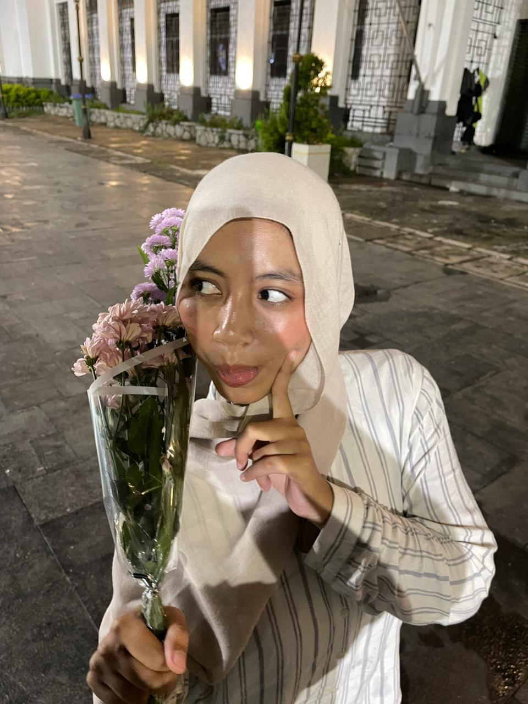
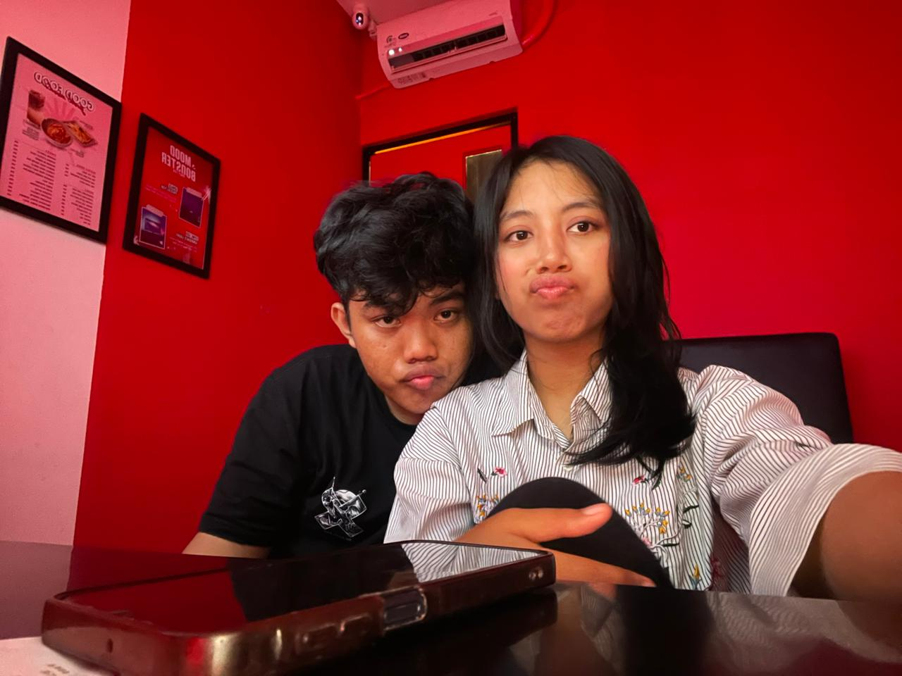
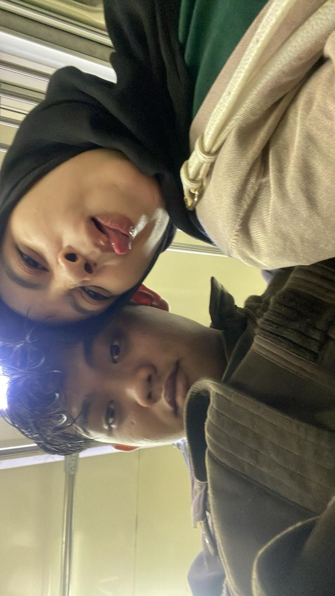
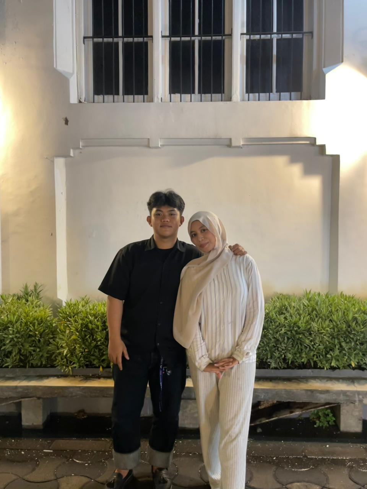
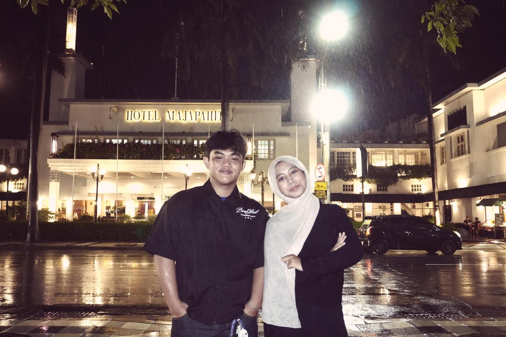

Aku belajar bahwa cinta tidak selalu tentang hal besar.
Kadang ia hadir lewat senyum kecil, obrolan sederhana,
dan rasa nyaman yang tidak pernah aku temukan sebelumnya.

Di malam yang sederhana, kamu membawa keindahan yang tidak sederhana.
Senyummu membuatku yakin bahwa memilihmu adalah keputusan terbaik.

Bersamamu, aku tidak perlu menjadi siapa-siapa.
Cukup menjadi diriku sendiri, dan itu sudah terasa lengkap.

Di tengah perjalanan yang melelahkan,
aku menemukan tenang di bahumu, di tatapanmu.

Kita berdiri berdampingan, bukan karena harus,
tapi karena ingin. Dan itu adalah bentuk cinta paling jujur.

Hujan turun, malam dingin,
tapi selama aku bersamamu, semuanya terasa cukup.
Selamat Ulang Tahun, Sayangku 🎂
Hari ini bukan sekadar tentang bertambahnya usia,
tetapi tentang betapa berharganya kamu bagi dunia
dan terutama, bagi hidupku.
Terima kasih sudah tumbuh menjadi pribadi yang lembut,
kuat, dan penuh kasih. Terima kasih karena tetap menjadi kamu,
dengan segala kelebihan dan kekurangan yang justru
membuatmu begitu istimewa di mataku.
Di setiap langkahmu ke depan,
aku berdoa semoga kamu selalu diberi kesehatan,
ketenangan hati, dan kekuatan untuk meraih mimpi-mimpi
yang selama ini kamu simpan dalam doa-doa kecilmu.
Semoga senyummu tidak pernah kehilangan alasan untuk muncul,
semoga hatimu selalu menemukan rumah,
dan semoga setiap lelahmu selalu berakhir dengan bahagia.
Jika suatu hari dunia terasa berat,
ingatlah bahwa kamu tidak pernah sendiri.
Aku akan selalu ada di sisimu,
mendengarkan, menemani, dan memilihmu
berkali-kali, tanpa ragu.
Aku bersyukur karena kamu lahir ke dunia ini,
dan aku lebih bersyukur lagi karena kamu hadir di hidupku 🤍
Janji Kecil Dariku 💌
Aku tidak berjanji menjadi sempurna,
tapi aku berjanji untuk selalu memilihmu
hari ini, esok, dan seterusnya.